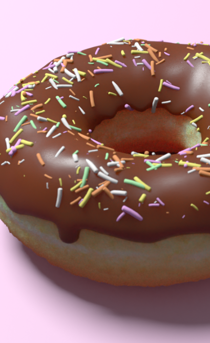
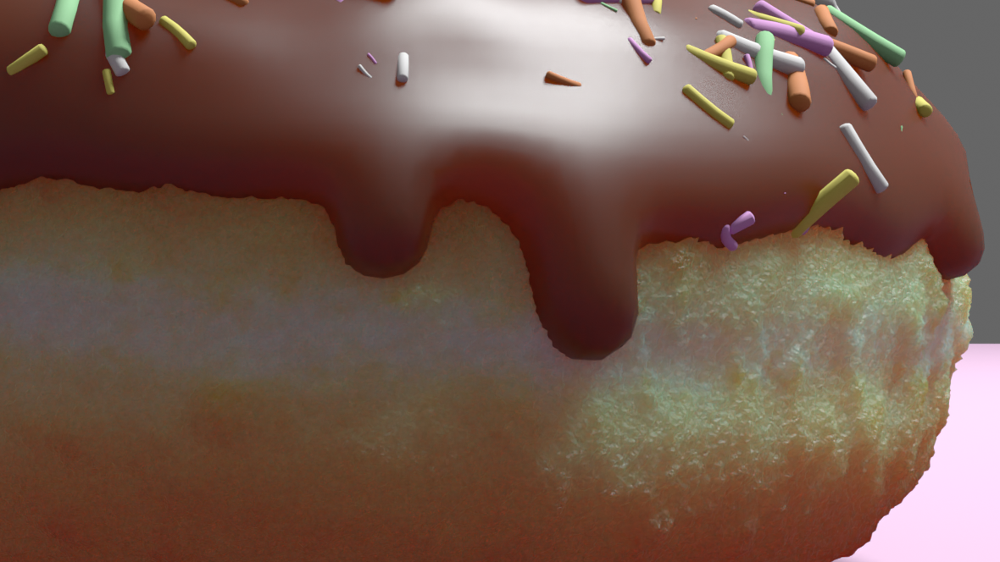

カラフルチョコドーナツ
https://youtu.be/lkUuoQiwAHsセブンイレブンの「カラフルチョコドーナツ」をモデリングしました。
チュートリアル動画ではピンク色のアイシングドーナツでしたが、
実際に販売されていた物を見本としたかったのでチョコドーナツにしました。
制作期間：35時間 キーワード:ドーナツ × Blender


ワイヤーフレーム
制作過程
Youtube で海外のモデリング動画を見ながら制作しました。
Blender でのモデリングは初めてだったのでかなり試行錯誤していましたが、満足のいくものができました。
